我们先从两个小调查开始，分别是数学和烹饪方面的。从表面上看，它们有些许相似之处，但没有更恰当的词来形容这些相似之处，暂且称它们为“精神”相通，我会在最后详细说明。
涂鸦
几年前我开始涂鸦，我拿着纸和笔坐下来时会毫无目的地画一些线。我画了一个带网格线的正方形。
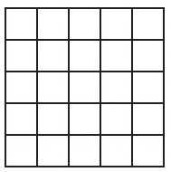
我在一些小方格里画上对角线。
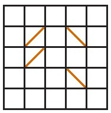
我将这些线想象成镜子。我想知道如果一束光线射入这个正方形，并且开始四处反射会发生什么。
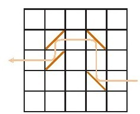
我注意到这束光可能光顾同一个小方格两次，也就是说它能在同一面镜子上产生两次反射。
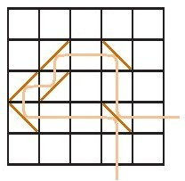
这让我很好奇光的反射可以持续多长。以一个正方形为例，假设我可以随意摆放镜子，我能设置的路径有多长？
我从小正方形开始。2×2正方形允许路径长度为5。
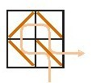
（我对光束可进入的每一个小方格进行计数，进入两次的算2个。）
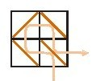
而面对3×3正方形，我最初得到的路径长度为9，
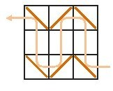
之后得出长度是10，
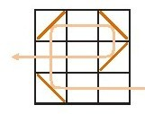
再后来长度是11。
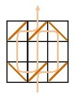
看起来这是我能得到的最大值了。
是吗？真的吗？我在做些什么呢？
我只是觉得有点好玩。最初是一个网格，之后里面有了镜子。我自己毫无计划地画一些线，再胡乱画一些对角线，追踪光的照射路径。
我那时很好奇，我想知道自己能为光线设定多长的路径。我想知道4×4正方形、5×5正方形……中光能走行的最长路径，以此类推不断地计算下去。一段时间之后，我又好奇如果是长方形会怎样。
你可能已经意识到自己正在面对一个对简单、原始的纸笔运动乐此不疲的人。当我最初想到在正方形里放上镜子的时候，我一个接着一个地画了一个又一个网格。
我能为4×4正方形设定的最长光行路径为22。
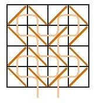
我能为5×5正方形设定的最长光行路径为35。
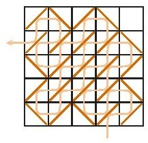
但是看起来有点小遗憾，不是吗？我设定的路径从未到达一个小方格（右上角的小方格）。如果我让光线行经每一个小方格，我还能得出一条更长的路径吗，不能吗？但是我试过了，我觉得不能。
一番思考后，我能证明我所得出的4×4正方形的光行路径长度可能就是最大值。
你可能会怀疑：“这真的是数学吗？”
这的确是数学。我以宽泛的态度看待这一学科，于我而言，任何可以被完整、清楚地描述出来的结构都是数学结构，而任何可以准确证明关于这个结构的命题都是数学命题。证明是数学的一大成就。创造这样一个结构，对其进行探索，证明关于它的各种命题——这就是数学。
正方形的结构、镜子以及光的射线可以被完整、清楚地描述出来，并且在4×4正方形里光可以行走的最长路径为22正是一个数学命题。
以下是我对4×4正方形最长光行路径为22的证明：
因为我们已经有了一个上述命题的例证，现在要做的只是证明不可能再有更长的路径了。
很明显，光最多可以进入同一个小方格两次，就像这样
或者这样
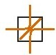
但是只能进入处在边缘的那些小方格一次，
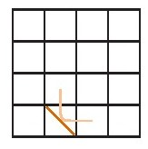
除了光正在进入或者离开的时候
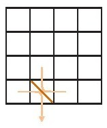
因此，我们能做到的极限值是：
1.探访内部的四个小方格两次；
2.探访处在边缘的小方格一次；
3.探访其中两个处在边缘的小方格两次。
这样，正如前面的例子所展示的，我们得到的总和是22。
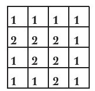
这也证明了22是我们（所有人）能得到的最大值。
我称它为“涂鸦”。还有更多种涂鸦，任何人都能创造出自己的涂鸦——仅仅是按照自己的意愿制定规则。比如说我，对这种单面镜涂鸦乐在其中。它是这样的：
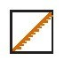
镜子只有一面会反射光，这是一个小例子。
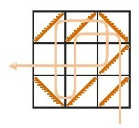
有很多乐趣在其中，我认为我能在4×4正方形里实现长度为33的光行路径。
还有各种各样的涂鸦，我建立了一个网站，这本书里大部分章节都在网站上有注释说明：
press. princeton.edu/titles/10436.html
我请各位读者来网站看看，特别要告诉你们的是，那里有很多涂鸦。
我也请你与我分享你的涂鸦：jhenle@smith.edu
面条
这个标题看起来有点突兀。面条和涂鸦看起来完全没有共同之处，但我会在这一章节结束的时候再说。
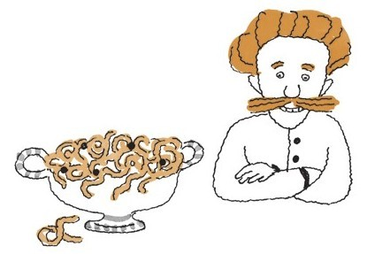
事情源于几年前，当时我正为朋友们准备晚餐。我原本计划做意大利面。
但是当我知道有一位客人有乳糜泻症，对小麦蛋白过敏时，我的计划就被打乱了，她不能吃小麦做的意大利面。
这真是个坏消息，但我还是决定做意大利面。在杂货店我发现了一种玉米做的意大利面条，就买了一箱，做好之后就招待我那些困惑不已的朋友们吃了一顿面糊糊。
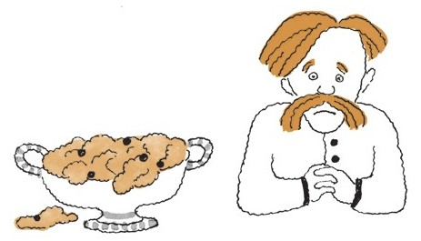
可能是因为煮过头了，但是我想不将玉米意大利面条煮透的唯一方法就是把它留在杂货店里。
我的客人尴尬地向我表示了感谢。我本来可以将这事就此忘掉，但是我看到了令我好奇着迷的挑战。有什么可以替代意大利面呢？我能不能找到一种物质是：
·不含麸质，并且
·吃起来和意大利面一样呢？
不是饺子，不是团子，也不是蒸粗麦粉，这些都含有小麦。
我想要的是一种用途很多的人造意大利面，可以轻松取代通心粉或斜管面。法式炸薯条、球芽甘蓝、玉米片……我几乎都试过了。
这似乎是艰难无比的挑战，甚至可能毫无意义，但这确实令我着迷。
而且这项挑战让我乐在其中。如果我告诉你们，经过几年的尝试，我的意大利面替代品已经上桌了，你们会被吓到吧。我在成功和失败间游走，除了我的家人，没有人受到伤害。
我做过最快乐的实验是需要剥玉米粒的。以下是一个可行的范例。
玉米意大利面：斯提尔顿奶酪和胡桃仁
（四人份，作为第一道菜）
略多于½杯的胡桃仁
略多于½杯上好的、熟的斯提尔顿奶酪
4杯新鲜甜玉米粒
2汤匙花生油
盐适量
胡桃仁烘烤后[1]，剁碎。
奶酪剁碎。
炉上放一个足够容纳所有玉米粒的平底锅，开高火。锅烧热后加入花生油，等油变热后放入所有玉米粒，并翻炒均匀，直至玉米变熟（3分钟或者更短的时间）。
改小火，除了坚果，将余下的食材一起入锅，翻炒直至奶酪熔化。根据个人口味放盐调味，撒入坚果碎粒后就可以上桌享用了。
有人可能会抱怨说“玉米不像意大利面那样软，而且玉米也不如意大利面那样入味儿”。确实是这样，但是这是一道绝佳的美食。
如果你想要一种口感软的意大利面替代品，用米就可以了，但是，我说的不是意大利调味饭。意大利调味饭不是意大利面的替代品。无论你用什么酱料，真正的意大利面的烹饪过程几乎是一样的。意面替代品的烹饪其实就是与酱料进行混合，而不同的意大利调味饭有不同的烹饪方法。
米的种类很重要，好的泰国香米可以带给你松软的口感，但米粒和许多意面酱料一起咀嚼时的口感就不一定软了。
代意面米饭：黄油和鼠尾草（四人份，作为第一道菜）
1杯新鲜香米
1杯水（见下文）
3汤匙黄油
¼杯切碎的新鲜鼠尾草
杯新磨帕玛森芝士
盐适量，但不少于½茶匙
我从本地一家亚洲食杂店买了一袋25磅装的香米。多半这些米袋上会标识着“新米”，或者类似的字样。这种米是最佳食材（除非它并不是真的新米），一杯米用一杯水。如果米不怎么新鲜，每杯米再多加1～2茶匙[2]的水似乎会好一点。
将米和适量的水放入煮锅，盖上锅盖，炉火至高档。当水开始沸腾（但在水沸溢之前）将炉火尽可能降至最低，一直盖住锅盖。锅中的米会冒泡，出蒸汽。当你看到锅盖下不再有水蒸气散出（但是要在米变焦糊之前）关火停止加热。这一步骤大概需要5～6分钟。继续盖住锅盖将米饭在锅中静置5分钟。
将黄油放入一个大碗。将静置好的米饭用叉子拨入碗中，翻动使大米粒均匀裹上一层黄油。加入鼠尾草和芝士，搅拌混合，加入适量的盐。我喜欢用海盐，如果颗粒比较大，可以将盐晶磨细。
但愿你们没被我这个米饭做法难住。其实这个方法并不难，你有几分钟的时间可以将火调小。如果米和水溢出也没什么，只是弄得一团糟而已。
你还有几分钟的时间可以停止加热米饭。即使糊了，大部分的米饭还是好的。对于锅底烧焦成咖啡色的米饭，我还有一个很棒的食谱可以分享。
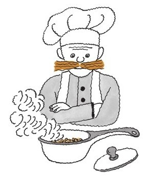
还有其他的好点子吗？鹰嘴豆？西葫芦？油炸薄肉片？这样的尝试、创新永无止境。
以下网站还有很多食谱[3]：
press. princeton.edu/titles/10436.html
我对你们的食谱也很感兴趣。
面条和涂鸦
除了英文读音（noodles and doodles），面条和涂鸦没有什么共同之处。我想通过它们证明数学和美食烹饪学之间的共同特征，而这些特征会在本书中反复出现。
首先，它们都是充满乐趣的事，当然，有时候我们做饭只是因为饿了，而有时候我们进行数字计算是因为不得不纳税。但是真正的烹饪和数学确实是一大乐事。它们是结构和材料的游戏，伴随它们的是能够深深吸引你的创意和美味。
其次，尽管吸引力与审美有关，但是也与智力相关。我们都是好奇宝宝，我们想去品尝味道，想自己动手修修补补；我们想去探索，有所发现。我们尽情享受未知的一切。
第三，也是最重要的一点，我们常常不知道自己在做什么。我们踯躅徘徊。数学和美食学是难以理解的神秘事物，我们必须在不断犯错中成长、进步。我们成为实验者，尝试这个，尝试那个。看上去我们好像没什么章法，但事实并非如此。出人意料的是，对最优秀的厨师和数学家来说，四处碰壁，在失败中继续尝试也是一种有效的方法。
下一章节我们会关注在失败中进步。
告诉我们如何解开数学题的书成百上千，而讲述烹饪方法的书成千上万。下一章我（可能）会说服你相信一把钥匙有时不止开一把锁。